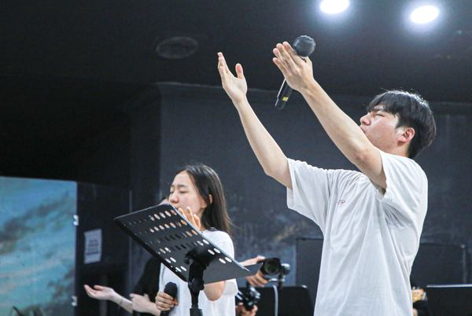

홈 › 캠프 › 영성 캠프 › 청소년 캠프
청소년 캠프
중 · 고등학생을 위한 영성 캠프입니다. 성적표가 아니라 부르심으로 자신을 설명할 수 있게 돕습니다.
For Teens
이런 친구들을 기다립니다
- 교회는 다니지만 신앙이 내 것이라고 느껴지지 않는 학생
- 학업과 진로 앞에서 기준을 잃은 것 같은 학생
- 친구 관계와 SNS 속에서 지쳐 있는 학생
- 교회에 처음 오는 친구를 데려오고 싶은 학생
| 대상 | 중학교 1학년 ~ 고등학교 3학년 |
|---|---|
| 일정 | 5차 1.7~9 · 6차 1.14~16 · 7차 1.21~23 (각 2박 3일) |
| 신청 마감 | 5차 2026. 12. 23(수) · 6차 12. 30(수) · 7차 2027. 1. 6(수) (차수별 마감) |
| 장소 | 태안수양관 (AKC 자체 운영 시설) |
| 참가비 | 90,000원 (청년 · 청소년 동일 · 숙박 · 식사 5끼 포함 · 교통 미포함) |
| 진행 | 이번 5~7차 캠프는 청년과 함께 진행합니다 |
| 문의 | 010-2977-9586 |
After Camp
더 뜨거워지는 캠프
지난 캠프의 포스터와 현장입니다. 캠프는 3일이지만, 그 뒤의 이야기가 더 뜨겁습니다.


